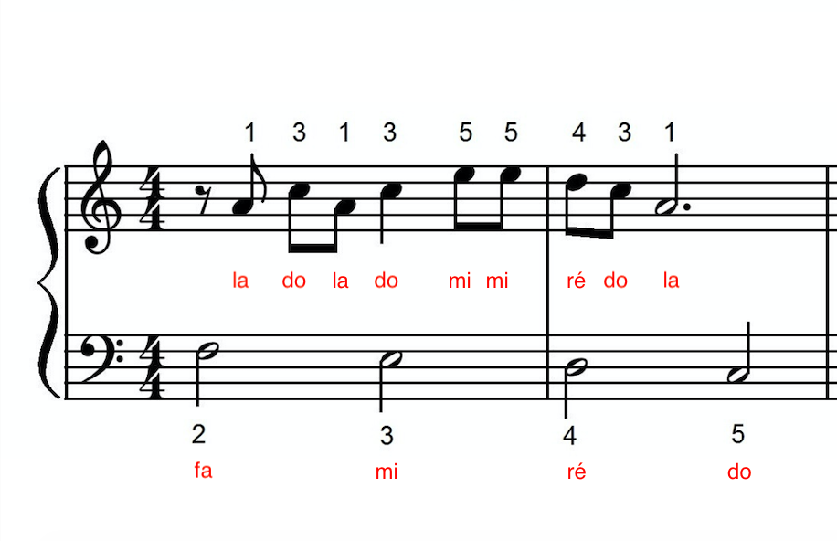

Cette partition montre comment lire et jouer un morceau grâce au solfège.
Elle est écrite sur deux portées : la clé de sol en haut (main droite) et la clé de fa en bas (main gauche), ce qui est typique pour le piano.
Les notes sont placées sur les lignes et les espaces, et leur position indique leur hauteur (grave ou aigu).
Ici, les noms des notes (do, ré, mi, etc.) sont écrits en rouge pour aider à la lecture. Les chiffres au-dessus indiquent les doigts à utiliser.
Le rythme est donné par les différentes formes de notes, et la mesure 4/4 indique qu’il y a 4 temps par mesure.
Le solfège permet de comprendre tous ces éléments : lire les notes, respecter le rythme et coordonner les deux mains.
C’est donc essentiel pour interpréter correctement une partition.
Hans Zimmer - Interstellar